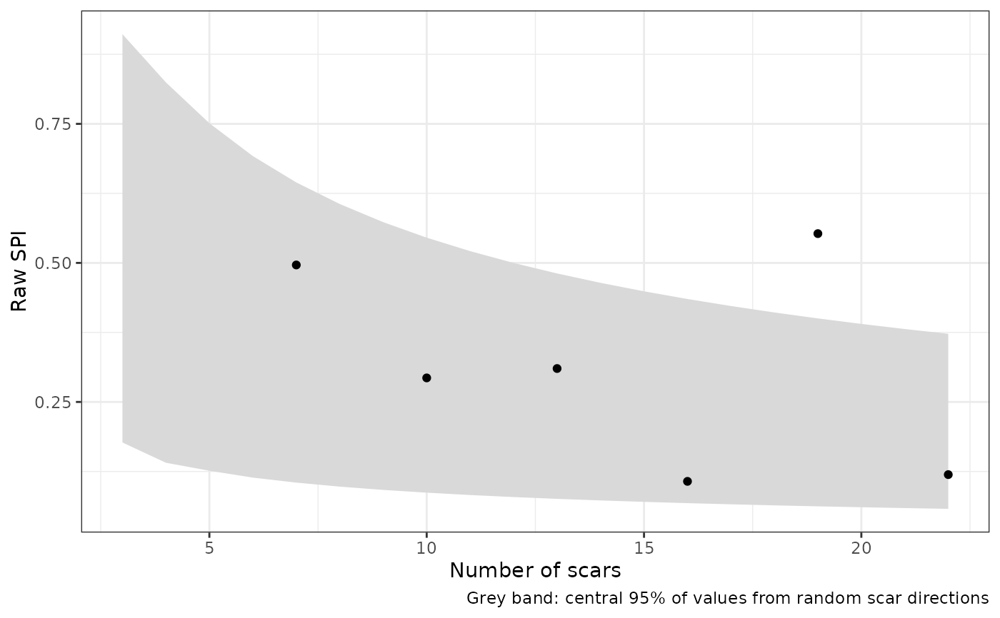

Plots the raw SPI, ER or IR of each core against its scar count, over the
random interval (the central 95% of values from cores with random scar
directions; see random_interval()). Cores outside the band depart from
what random directions produce at their scar count.
Usage
plot_random_interval(x, parameter = c("SPI", "ER", "IR"), group = NULL)Arguments
- x
The output of
spi_ei_batch(), with the columnsn_scarand<parameter>_raw.- parameter
"SPI","ER"or"IR".- group
Optional name of a column of
xto colour the cores by.
Examples
if (requireNamespace("ggplot2", quietly = TRUE)) {
set.seed(1)
scars <- do.call(rbind, lapply(1:6, function(i) {
n <- 4 + 3 * i
s <- matrix(rnorm(3 * n, sd = 10), n, 3)
d <- matrix(rnorm(3 * n), n, 3)
d[, 1] <- d[, 1] + (i %% 2)
data.frame(ID = paste0("core", i), Start_X = s[, 1], Start_Y = s[, 2],
Start_Z = s[, 3], End_X = s[, 1] + d[, 1],
End_Y = s[, 2] + d[, 2], End_Z = s[, 3] + d[, 3])
}))
fab <- spi_ei_batch(scars, rarefied = FALSE)
plot_random_interval(fab, "SPI")
}
